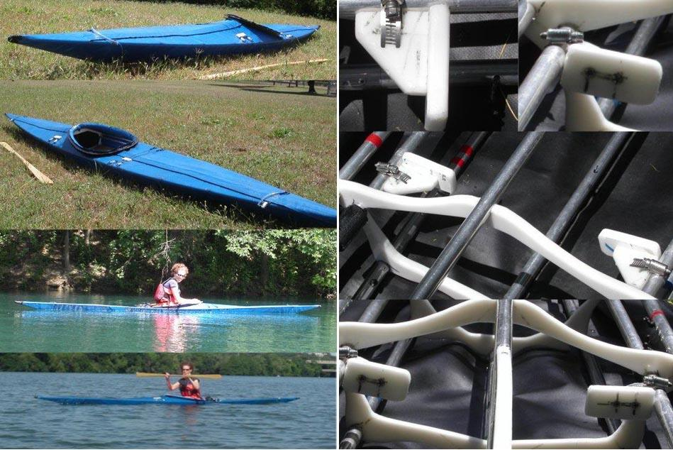

| Sea Rover LC by Steve Ulrich | Menu Previous Page Next Page |
|
 Jo Ulrich paddles her Sea Rover LC on Town Lake in Austin, Texas. The Sea Rover LC has a taller aft deck at 6in (15cm) and uses a larger 30 X 16in (76 X 40cm) coaming than the standard Sea Rover. Steve has included both front and aft deck zippers, a fiberglass coaming, and HDPE adjustable foot pedals. The pedals attach to the inwales with adjustable hose clamps. A simple yet functional system. |
|